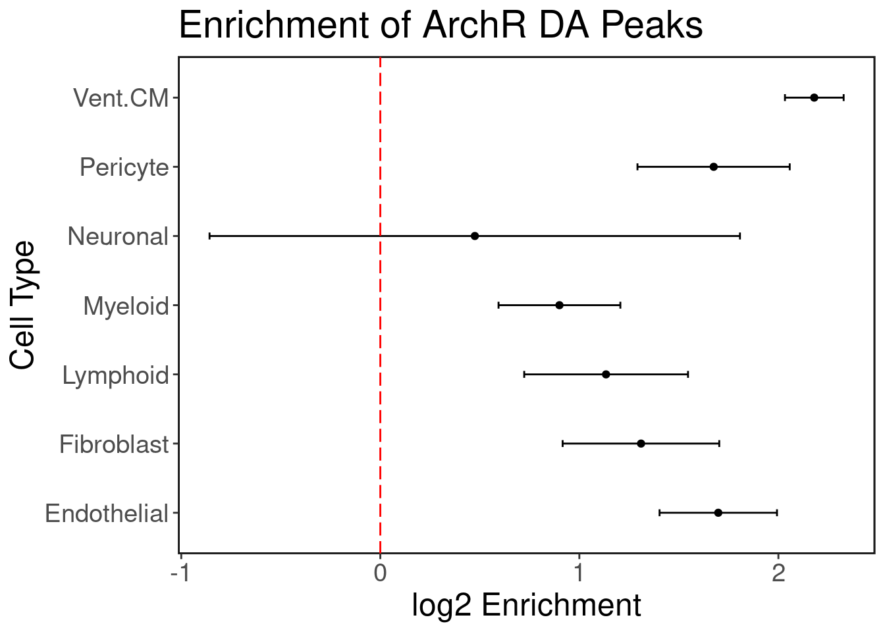

Heart eQTLs
Exploration: GTEx enrichment
GTEx has eQTL data for n = 495 individuals for heart tissue (left ventricle.) We hypothesize that the cardiomyocyte (CM) regulatory elements are enriched with heart eQTLs. We use Torus to perform this enrichment analysis. We plot the log2 enrichment result below.
enrich.df <- read.delim('../eQTL_enrich/results/torus_celltypes_combined.enrichment', header=F, sep="")
ggplot(enrich.df, aes(x=V2, y=V1)) + geom_point() + geom_errorbar(aes(xmin=V3, xmax=V4), colour="black", width=.1) + ggClean() +
xlab('log2 Enrichment') + ylab('Cell Type') + geom_vline(xintercept = 0, col='red', linetype = "longdash") + ggtitle('Enrichment of ArchR DA Peaks')
Heart eQTL Finemapping
Here we focus on eQTLs that are finemapped with a posterior probability of association > 0.8. There are approximately 2,300 such SNPs.
eqtl.pips <- read.delim('../eQTL_enrich/gtex_finemapping/GTEx_v8_finemapping_DAPG/SNP_PIP_df.txt', sep='\t', header = T)
eqtl.pips <- eqtl.pips[eqtl.pips$PIP > 0.8,]
eqtl.gr <- snpIDtoGR(eqtl.pips$SNP)
eqtl.gr$pip <- eqtl.pips$PIP
eqtl.gr$SNP <- eqtl.pips$SNP
rand.snps <- readLines('../matched_SNPs/eQTL_top_pip_hg19_5batches/snpsnap_match_hg38.txt')
rand.gr <- StringToGR(rand.snps)
rand.gr <- rand.gr[seqnames(rand.gr) %in% paste0("chr",1:22),]
seqlevels(rand.gr) <- paste0("chr",1:22)
rand.gr$SNP <- paste0(seqnames(rand.gr),'_',start(rand.gr))Get tissue activity of each eQTL from https://zenodo.org/record/3727189 (GTEx v8 paper)
eqtl.lfsr <- suppressMessages(vroom::vroom('../eQTL_enrich/broadinstitute-gtex-v8-a014b43/data/Fig6C_all_top.z_lfsr.sig.pruned.txt.gz'))
tissues.active <- rowSums(eqtl.lfsr[,3:ncol(eqtl.lfsr)] < 0.01, na.rm = T)
eqtl.ntissues <- data.frame(eqtl=eqtl.lfsr$variant, ntissues=tissues.active) %>% group_by(eqtl) %>% summarise(mean_tissues = mean(ntissues))## `summarise()` ungrouping output (override with `.groups` argument)Add tissue activity to our eQTL genomic ranges object
eqtl.gr$ntissues.active <- eqtl.ntissues$mean_tissues[match(eqtl.gr$SNP, eqtl.ntissues$eqtl)]
eqtl.gr.low <- eqtl.gr[which(eqtl.gr$ntissues.active<=10),]
eqtl.gr.high <- eqtl.gr[which(eqtl.gr$ntissues.active>=30),]Split ventrical cardiomyocyte peaks into cell-type specific and into shared.
satac <- suppressMessages(loadArchRProject('../ArchR/ArchR_heart/', showLogo = F))
union.set <- getPeakSet(satac)
ventCalls <- readRDS('../ArchR/ArchR_heart/PeakCalls/Vent..CM-reproduciblePeaks.gr.rds')
markers <- readRDS('../ArchR/ArchR_heart/PeakCalls/DA_MARKERS_FDRP_1_log2FC_1.rds')
vent.specific <- markers$`Vent. CM`
hits <- GenomicRanges::findOverlaps(query = vent.specific, subject = ventCalls)
vent.shared <- ventCalls[-subjectHits(hits),]
hits <- GenomicRanges::findOverlaps(query = ventCalls, subject = union.set)
non.cm.peaks <- union.set[-subjectHits(hits)]There are 48,012 cell-type specific peaks, and ~97,500 that are shared CM peaks.
Overlap generic genomic annotations with top eQTLs
disjoint.annots <- readRDS('../eQTL_enrich/annotations/hg38_disjoint_annotations.gr.rds')Overlap eQTLs with exons, introns, etc.
eqtl.genome.dist.df <- SNPGenomeDistrib(snp.gr = eqtl.gr, genomic.annots = disjoint.annots)
#eqtl.dist.low.df <- SNPGenomeDistrib(snp.gr = eqtl.gr.low, genomic.annots = disjoint.annots)
#eqtl.dist.high.df <- SNPGenomeDistrib(snp.gr = eqtl.gr.high, genomic.annots = disjoint.annots)
rand.genome.dist.df <- SNPGenomeDistrib(snp.gr = rand.gr, genomic.annots = disjoint.annots)Distribution of top eQTLs across the genome. Most are in intronic regions which is reasonable given they are cis-eQTLs. About 6% are in the cell-type specific CM peaks, and ~24% are in the shared CM peaks (note that these peaks are disjoint sets).
genomic.dist.df <- Reduce(rbind, list(rand.genome.dist.df, eqtl.genome.dist.df))
genomic.dist.df$SNPs <- c(rep("Random SNPs", nrow(rand.genome.dist.df)),
rep("eQTLs", nrow(eqtl.genome.dist.df)))
eqtl.union.set <- join_overlap_list(gr.list = list("Union Set"=union.set), X = eqtl.gr)
genomic.dist.df["Union eQTL",] <- c(100*length(eqtl.union.set$`Union Set`)/length(eqtl.gr), "Union Peak Set", "eQTLs")
rand.union.set <- join_overlap_list(gr.list = list("Union Set"=union.set), X = rand.gr)
genomic.dist.df["Union Random",] <- c(100*length(rand.union.set$`Union Set`)/length(rand.gr), "Union Peak Set", "Random SNPs")
genomic.dist.df$freq <- as.numeric(genomic.dist.df$freq)Plot distributions
genomic.dist.df$category <- factor(genomic.dist.df$category, levels = rev(c("Union Peak Set","exon","intronic","UTR","promoter","intergenic")))
ggplot(genomic.dist.df, aes(y=category, x=freq, fill=SNPs)) +
geom_bar(stat="identity", position="dodge") + ggClean() + xlab("Percent SNPs") + ylab("Category") + ggtitle("Distribution of Top eQTLs") +
geom_hline(yintercept = 5.5, linetype="dashed") + scale_fill_manual(values = c("black","gray"))
Overlap scATAC-seq peaks with top eQTLs
peaks.gr.list <- list("CM Specific Peaks"=vent.specific, "CM Shared Peaks"=vent.shared, "Non-CM Peaks"=non.cm.peaks)
#peaks.eqtls <- join_overlap_list(gr.list = peaks.gr.list, X = eqtl.gr)
peaks.eqtls.low <- join_overlap_list(gr.list = peaks.gr.list, X = eqtl.gr.low)
peaks.eqtls.high <- join_overlap_list(gr.list = peaks.gr.list, X = eqtl.gr.high)
#peaks.random <- join_overlap_list(gr.list = peaks.gr.list, X = rand.gr)#freq <- sapply(peaks.eqtls, FUN = function(x){100*length(x)/length(eqtl.gr)})
#eqtl.dist.df <- data.frame(freq=freq, category=names(freq))
freq <- sapply(peaks.eqtls.low, FUN = function(x){100*length(x)/length(eqtl.gr.low)})
eqtl.dist.low.df <- data.frame(freq=freq, category=names(freq))
freq <- sapply(peaks.eqtls.high, FUN = function(x){100*length(x)/length(eqtl.gr.high)})
eqtl.dist.high.df <- data.frame(freq=freq, category=names(freq))
#freq <- sapply(peaks.random, FUN = function(x){100*length(x)/length(rand.gr)})
#rand.dist.df <- data.frame(freq=freq, category=names(freq))peak.dist.df <- Reduce(rbind, list(eqtl.dist.low.df, eqtl.dist.high.df))
peak.dist.df$SNPs <- c(rep("eQTLs (nTissue < 10)",nrow(eqtl.dist.low.df)),
rep("eQTLs (nTissue > 30)",nrow(eqtl.dist.high.df)))peak.dist.df$category <- factor(peak.dist.df$category, levels = rev(c("Non-CM Peaks","CM Shared Peaks", "CM Specific Peaks")))
ggplot(peak.dist.df, aes(y=category, x=freq, fill=SNPs)) +
geom_bar(stat="identity", position="dodge") + ggClean() + xlab("Percent") + ylab("Category") + ggtitle("Distribution of Top eQTLs") +
geom_hline(yintercept = 5.5, linetype="dashed") + scale_fill_manual(values = c("blue","red"))